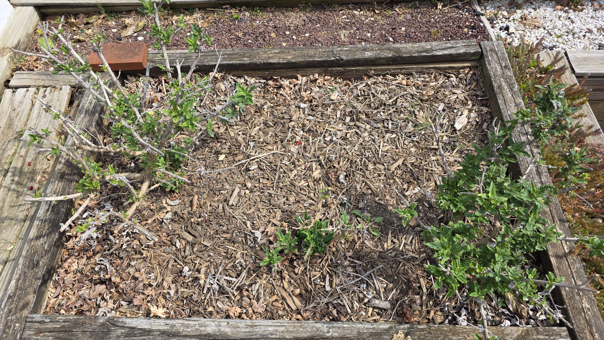

Plant Progress · Pugster Butterfly Bushes
Pugster Butterfly Bushes
Early spring wake-up, woody structure first, then fresh green pushing back in around the cut-back framework.
Starting to push again
This is the early-season stage where the butterfly bushes still look more like framework than fullness, but the fresh green is there if you look for it. New growth is breaking low and along the stems, with the bed still mostly mulch and structure for now.
April 14, 2026
Fresh growth on the old framework
The Pugsters are waking up in that unmistakable early-spring way, old woody stems still fully visible while fresh green breaks out low and along the remaining framework. It is not the showy phase yet, but it is exactly the stage that matters if you want to remember how hard they reset before filling back in.
Right now they look half asleep and half determined, which is usually how the good spring rebounds start.

- new growth is emerging cleanly from the woody structure
- bed is still in early-season framework mode
- useful checkpoint before the shrubs leaf out and bulk up
- worth tracking again once the bushes start throwing stronger length and flower growth